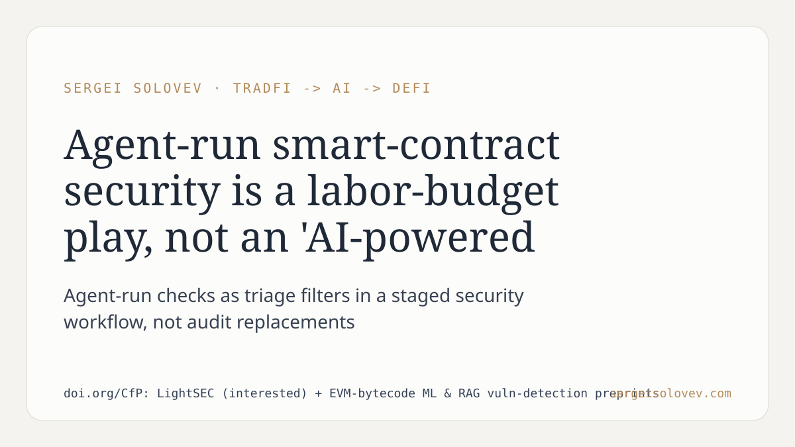

The standard pitch for AI-based smart-contract security is "AI-powered audit." The standard objection is that it misses what a human expert catches. Both framings miss the more tractable question: where does agent-assisted analysis fit in the cost structure of a security workflow.
The paper's core argument is that agent-run checks reduce the labor hours required for pre-audit triage and routine pattern detection — not the depth ceiling of a skilled human review. Framed that way, the value proposition is a budget allocation question: how many findings per engineering-hour can automated pre-checks deliver before a senior auditor touches the code. That is a different question from whether the agent matches human judgment on a qualitative audit bar.
The practical consequence is that deployment decisions should be evaluated on throughput and cost-per-finding metrics. Teams integrating these tools into security pipelines benefit from treating them as triage filters in a staged workflow, not as audit replacements. That reframing also clarifies where EVM-bytecode ML and RAG-based vulnerability detection fit as components: vertically specialized stages, not general-purpose substitutes for human review.
Selling outcomes — findings delivered per package, pre-check coverage per sprint — follows naturally from this framing. Selling "AI-powered audit" does not.
https://doi.org/CfP: LightSEC (interested) + EVM-bytecode ML & RAG vuln-detection preprints
#SmartContracts #AIagents #ML